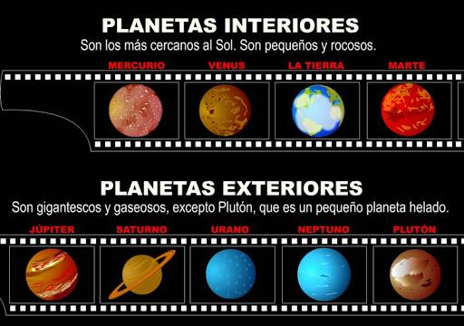

Todos conocemos los planetas que componen nuestro Sistema Solar, del que somos parte pero, además de estos, en el Universo existen múltiples planetas, de naturaleza muy diferente y con muy diferentes características. En general, un planeta es cualquier cuerpo celeste que tiene fuerza de gravedad, es esférico y orbita alrededor de una estrella. Muchos cuerpos celestes cumplen estos parámetros, teniendo características diferentes de composición, temperatura, etc. Estas características han ayudado a los investigadores a clasificar los planetas, tanto de nuestro Sistema Solar como los de fuera. En esta lección de unPROFESOR veremos qué es un planeta y la clasificación de los planetas según diferentes características.
A lo largo de la historia, la definición de planeta ha ido cambiando según los investigadores iban descubriendo nuevas cosas sobre el Universo. La definición más sencilla de planeta es la siguiente:
Un planeta es un cuerpo celeste que posee la suficiente masa como para generar su propia fuerza de gravedad, tiene forma esférica (que aporta un equilibrio hidrostático) y orbita alrededor de una estrella.
Otros muchos cuerpos celestes no cumplen todas estas características, por lo que no se consideran planetas. Están los planetas secundarios, que no orbitan alrededor de una estrella sino que orbitan alrededor de otros planetas; los planetas menores, que tienen un tamaño demasiado pequeño como para tener fuerza de gravedad (asteroides y cometas), enanas marrones, con demasiada masa para ser un planeta y demasiado poca para ser una estrella...
Muchos cuerpos celestes de diferente naturaleza cumplen con estas características por lo que los investigadores han sido capaces de agrupar los planetas siguiendo una gran cantidad de parámetros diferentes. En esta lección solo abordaremos las clasificaciones más intuitivas y sencillas, pero seguro que si investigas sobre el tema puedes encontrar otras muchas clasificaciones.